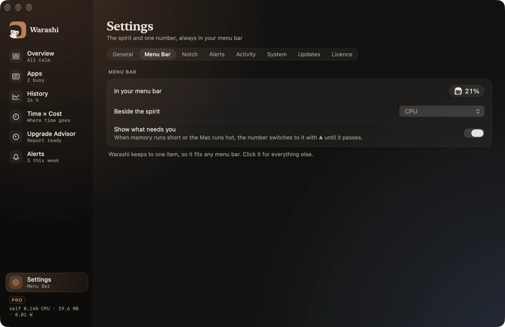

Warashi keeps to one small item in the menu bar, so it fits even a crowded one: the spirit and one live number.
Choose what the menu bar shows
- Open Settings › Menu Bar
Click the spirit, then the gear at the bottom of the popover (or press ⌘,), and choose the Menu Bar tab.

- Pick a number
Use Beside the spirit: CPU (the default), memory, GPU, power, temperature, network, disk or battery. Choose None for the spirit alone. The preview at the top shows how it will look.
- Decide about warnings
With Show what needs you on, the number switches to the problem with ▲ while memory is short or the Mac runs hot, for example
▲ MEM 29 GB, then switches back.
Use the popover
- Click the spirit
The popover opens with eight tiles. CPU and memory show the last minute as a chart, plus the 95th percentile (p95) and the peak of the last hour.

The popover: eight tiles and the top apps. - Check the top apps
At the bottom, the busiest apps right now. Switch between CPU, Memory and Disk to rank them differently.
- Go further
The footer shows what Warashi itself uses, a gear for Settings and Open Warashi (⌘O) for the window. Click outside or press Escape to close the popover.
If something's not right
- You can't see the spirit: it may be hidden behind the notch. See Troubleshooting.
- A tile says “unavailable”: macOS doesn't offer that reading on your Mac. Warashi never guesses a value.
More in Troubleshooting, or email adam@warashi.app.